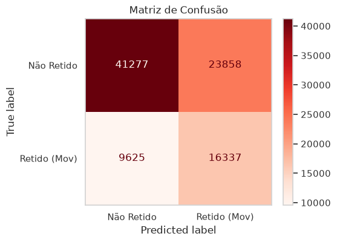
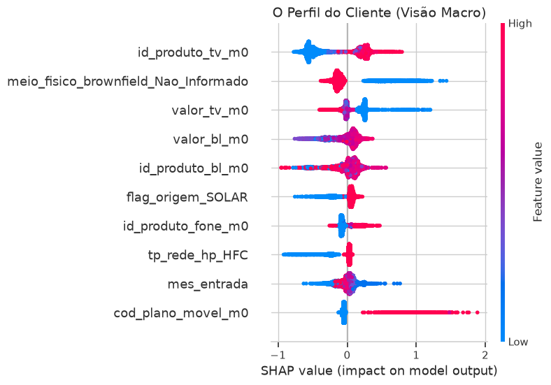
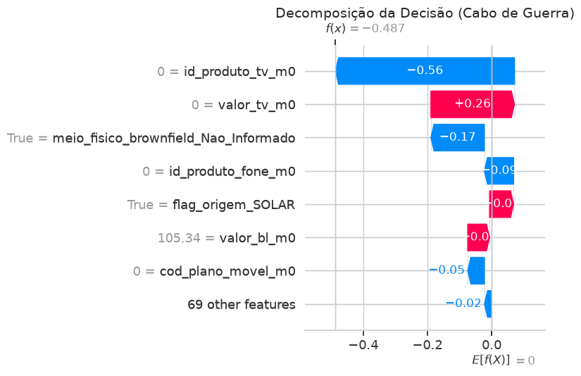

Case de Retenção + IA
Painel Executivo de Machine Learning
Modelo em Produção
Painel Executivo de Machine Learning
AUC-ROC
--
Estatística KS
--%
Coef. Matthews
--
Validação Cruzada
--
Carregando...
Carregando...

Da visão macro de negócios até a decomposição matemática individual de cada cliente (Cabo de Guerra).

